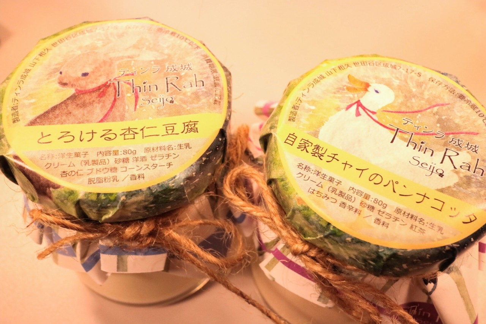
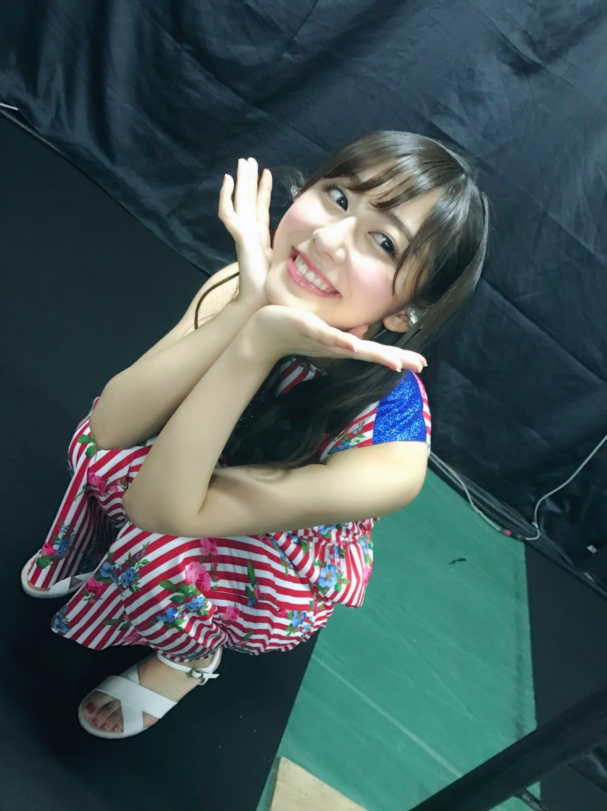

| 2017/02 26 Sun | スーパースターに |
ライブのあとの定番の
集合写真を撮る前に
みんなでワイワイ、オフショットを
撮る時間が好き！！
にこにこ☺︎

そんなライブの日の差し入れが
とっても美味しかったの！
◎Chihafood◎

ティンラ成城さんの、
「とろける杏仁豆腐」と
「自家製チャイのパンナコッタ」！
もう一回食べたい、忘れられない味...☺︎
味も美味しければ
食感もプルプルで食べやすいし
見た目も可愛い！
他の味もあったし...
是非みなさんにも食べていただきたいです( ¨̮ )
------------------------------------------------♡
♬ ChihaMusic
「スーパースターになったら」back numberさん
私からしたらこの気持ち
ものすごく分かる。
スーパースターになって
胸を張れるようになりたいし、
周りの人を見返してやりたいって
いう気持ち。
特に二番の歌詞に共感する。
"君がどこの街に住んでいても
遠くからでもよく見えるような光に"
光り輝くオーラを持つような
スーパースターに。
私もなりたい。

昨日の写真もこの写真も全部
純奈が撮ってくれたんだよ〜(> <)
優しい...
おやすみ
斎藤ちはる
コメント(220)
2017/02/26 23:57